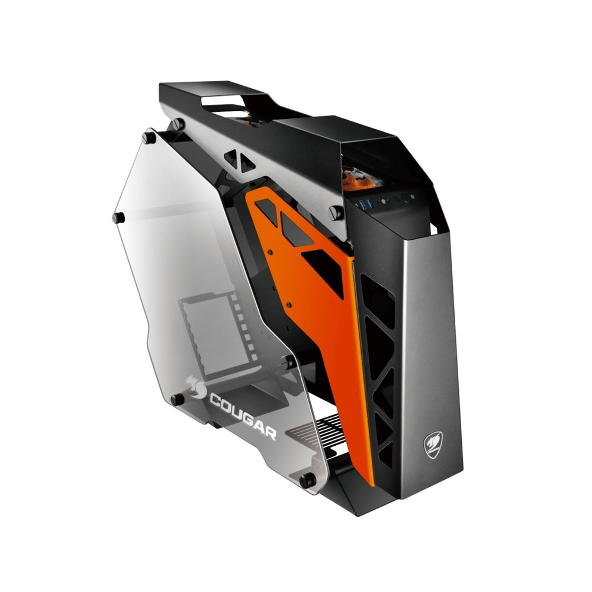
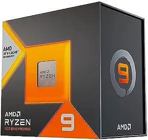
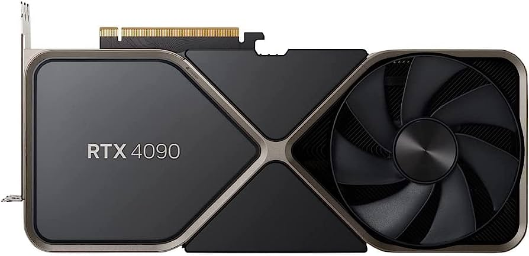
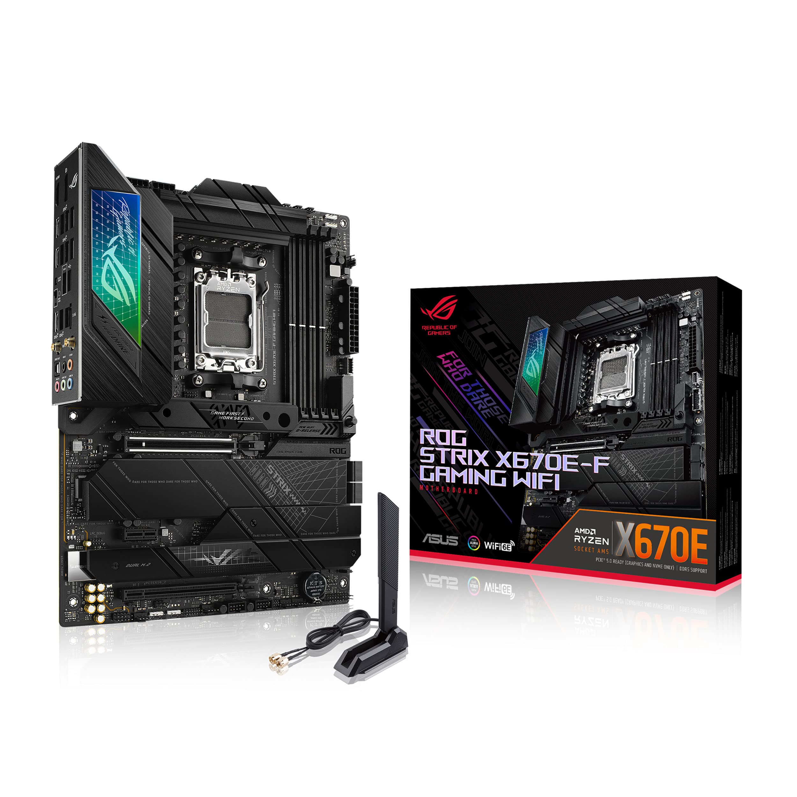
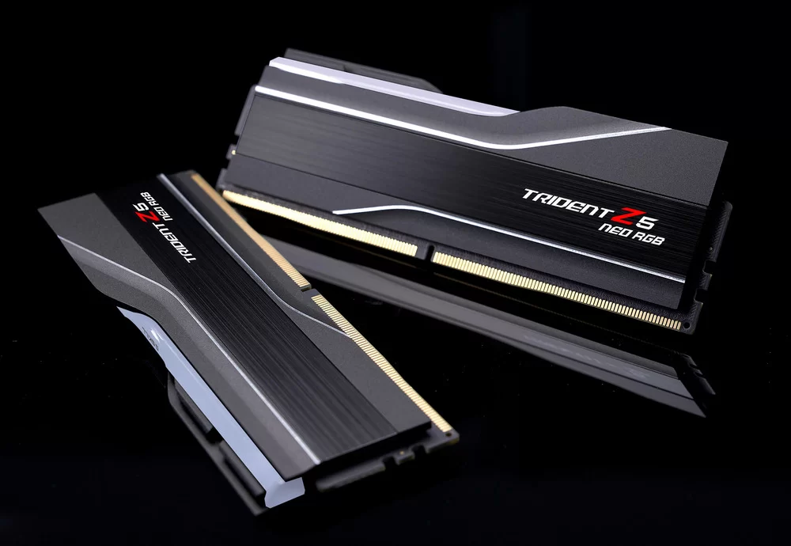
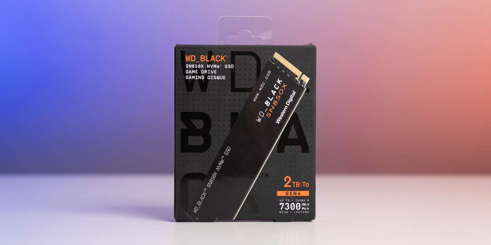
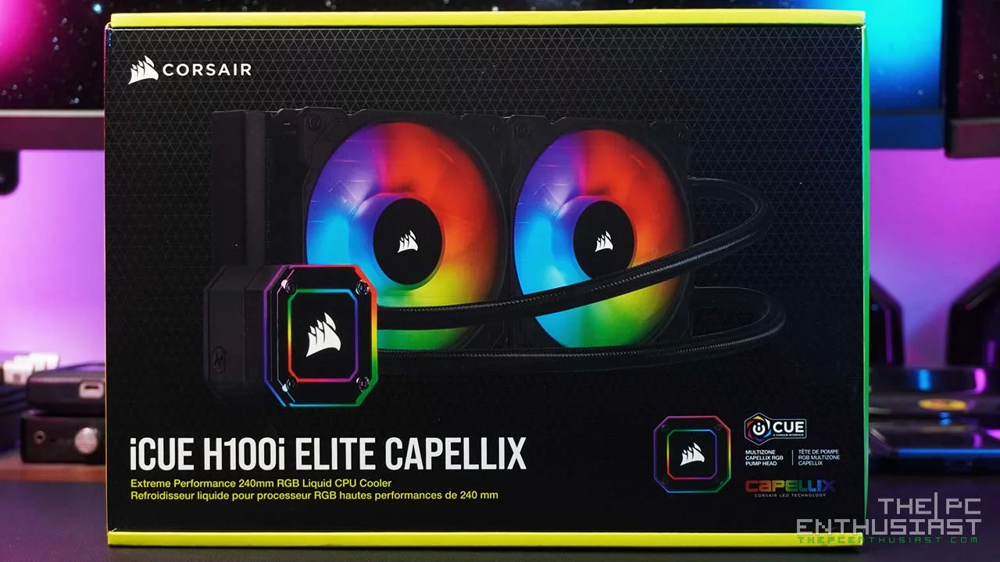

|
System Total = $2,485/$4,096(with Water-Colling)
|
|  |
Cougar Conquer |
→ |
- Price: $269/$491
-
Behold the crème de la crème of computer cases,
a masterpiece that not only flaunts the sleekest design but also comes with built-in water coolers,
ready to chill your system like a polar bear in a snowstorm.
It's the kind of case that screams 'best of the best' louder than a rockstar at a concert.
But here's the twist; the water coolers are like a high-tech jigsaw puzzle waiting to be installed.
It's a DIY cooling fiesta, where you're not just building a PC; you're crafting a liquid-cooled masterpiece.
So, if you're up for the challenge and want your computer to be cooler than the Fonz on ice,
this case is your ticket to PC paradise.
Just remember, the only thing hotter than your Girlfrend will be your TopG Cougar Conquer
|
|  |
AMD Ryzen 9 |
→ |
- Price: $129/$599
-
Meet the powerhouse of your computer, a marvel of built-in capabilities that turns your digital dreams into reality.
This beast is like the superhero of silicon, flexing its muscles in the face of complex tasks.
But here's the catch; it's as delicate as a house of cards in a windstorm.
One pin out of place, and suddenly you're watching $500+ disappear faster than your Wi-Fi during a thunderstorm.
It's a game of precision, folks, like defusing a digital bomb.
|
|  |
RTX 4090
|
→ |
- Price: $1,269+/$1,699+
-
You want power, you need performance, and guess what? We've got the graphics card.
That's the hero of the digital story right now.
But for a cinematic experience that'll have you seeing pixels in 4D, just drop $2,359,
and you'll have a view of the plot so sharp, it's practically directing itself.
It's not just a graphics card; it's your ticket to a visual adventure that'll make other GPUs green with envy.
So, grab your popcorn, because with this graphics card, you're not just playing the game; you're starring in it.
And as for 'asdasdasdasda,' well, even the best graphics card can't decode that level of excitement
|
|  |
ROG Strix X670E-F |
→ |
- Price: $470/$572
-
Just as your dear mother brought you into this world,
a computer needs its own mother, and this Motherbored is the ultimate digital mom.
It runs the show smoother than your Mom, making sure every bit and byte is in line.
It handles code like a pro, stealing the show in the digital theater, and orchestrates your computer's existence like a conductor leading a symphony.
So, if you want your computer to run as smoothly as a heartfelt conversation with Mom, this Motherbored is the secret sauce.
It's the motherboard that makes your computer feel loved, just like those comforting home-cooked code lines from ChatGPT.
|
|  |
Trident-Z5 |
→ |
- Price: $109/$198
-
Much like your friend with OCD who randomly organizes their sock drawer,
this RAM is the mind-reader of the computer world. With the ability to access your thoughts faster than you can say 'scatterbrained,'
this memory module is like having a tech-savvy therapist for your computer.
It doesn't just store data; it's practically telepathic, predicting your next move in the digital dance.
So, if you're looking for a RAM that understands your computer's inner workings as well as your scatterbrained genius,
this is it. It's the random access memory your computer deserves,
because who wouldn't want a little chaos in the world of 1s and 0s
|
|  |
WD-Black SN850x SSD |
→ |
- Price: $114/$229
-
ust like an Instagram filter enhances your photos, this SSD takes storage to the next level.
With a whopping 2TB capacity and a power punch of 2900 watts, it's the most DM-worthy drive you can imagine.
This SSD doesn't just store data; it's a powerhouse that can handle more files than your favorite influencer's camera roll.
It's so fast; even your notifications will be struggling to keep up.
So, if you're ready for storage that's as powerful as a viral meme, this SSD is the real deal.
Prepare for a storage experience that's not just larger but more electrifying than a surprise livestream from your favorite celeb!
|
|  |
ICUE h100i ELITE Capellix
|
→ |
- Price: $125/$300
-
Y'all, it's hotter than a jalapeño in Texas, and if you want a cooler as cool as a Texas winter night,
meet the TopG water cooling system—the Bugatti of cooling. This beast doesn't just cool, it's a game-changer;
your CPU will be cooler than a snow cone at a summer fair. The TopG is not just about function; it's a style icon,
sleeker than a cowboy in a tailored suit. Installing it is easier than two-steppin' at a honky-tonk. So,
if you're ready for your PC to be cooler than a polar bear's picnic, hitch your wagon to the TopG,
because it's the only cooler that can handle the Texas heat without breaking a sweat.
Get ready for a ride smoother than a tumbleweed in a breeze, partner!
|